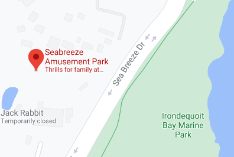
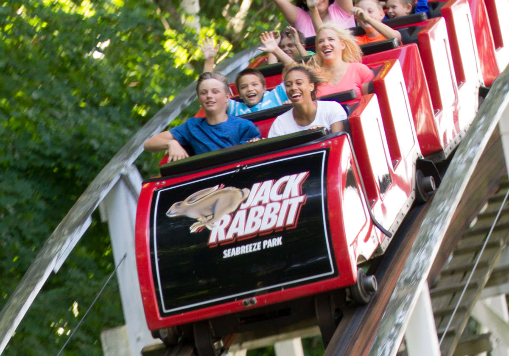

Founded in 1879, Seabreeze Amusement Park was little more than a plot of land and a dream. It wasn't until their first carousel was introduced in 1900 that business finally began to boom. Many years and regulations later, Seabreeze continued to prosper, becoming the very symbol of summer for kids throughout the Rochester area.

Just a few months ago, Seabreeze's famous rollercoaster "The Jack Rabbit" officially turned 100 years old. Having replaced their drive wheel (originally weighing 1,000 pounds) with a more modern drive system, their ride continues to accept passangers who've proven their growth past the 48-inch mark.
If that's not quite your speed, there are plenty of other attractions and fun to be had at the amusment park. The dizzying "Whirlwind" is akin to a teacup ride gone horribly wrong. While several feet in the air, riders spin and jolt to at a terrifying speed. If you rather stay on the ground, the "Music Express" will do much the same, except now at the tune of some classic hits! The fun doesn't stop there! Seabreeze has rides from bumper cars to bobsleds, and even a fairly new one called the "Time Machine" will have you wishing you could go back to a moment before losing your lunch.